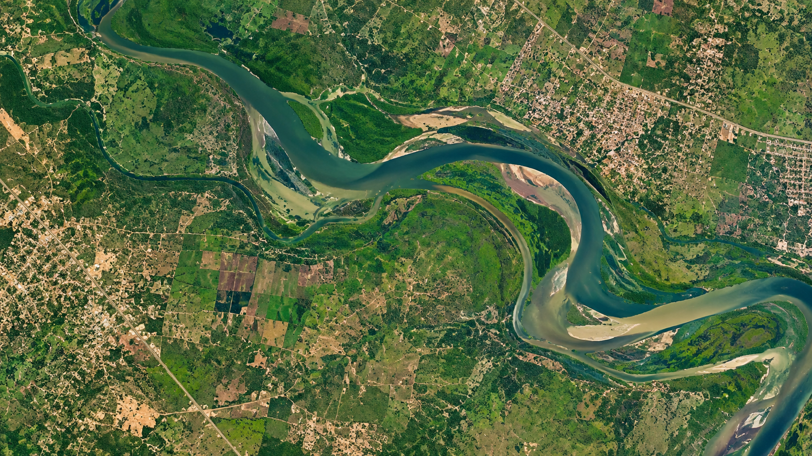

EYES TO EARTH · MOÇAMBIQUE
Observação da Terra e Inteligência Artificial ao serviço da monitorização da água
2.º Workshop de Estudantes
21 de Novembro de 2026 · Universidade Eduardo Mondlane
Conhecer o workshop
Imagem ilustrativa do contexto geográfico do rio Incomáti.O EVENTO
Sobre o 2.º Workshop
No dia 21 de Novembro de 2026, o projecto EYES TO EARTH realizou o seu segundo Workshop de Estudantes, reunindo 12 participantes provenientes de diferentes níveis académicos e áreas de formação.
O encontro promoveu a partilha de conhecimentos sobre a utilização de dados de satélite e Inteligência Artificial na monitorização dos recursos hídricos e na previsão de cheias.
O programa incluiu apresentações, actividades práticas, intercâmbio científico e uma demonstração da plataforma ETE.
Universidade Eduardo Mondlane (UEM), Faculdade de Ciências, Departamento de Física, Laboratório de Astronomia, Maputo, Moçambique.
CONHECIMENTO CIENTÍFICO
Temas do Workshop
Explore os principais temas abordados no encontro.
01 · Observação da Terra
Dados de satélite e análise da superfície terrestre.
Explorar tema →02 · Monitorização da água
Observação dos recursos hídricos e dos rios.
Explorar tema →03 · Inteligência Artificial
Aplicações de IA na análise de dados ambientais.
Explorar tema →04 · Previsão de cheias
Tecnologias de apoio à monitorização e previsão.
Explorar tema →Observação da Terra
A Observação da Terra utiliza tecnologias de satélite para recolher informações sobre a superfície terrestre, a vegetação, os rios e as alterações ambientais.
Monitorização dos recursos hídricos
A observação por satélite pode apoiar o acompanhamento dos rios, das áreas inundáveis e das alterações na disponibilidade de água.
Inteligência Artificial
A Inteligência Artificial permite analisar grandes conjuntos de dados e identificar padrões que podem apoiar estudos e decisões ambientais.
Previsão de cheias
A combinação de dados de satélite, informação ambiental e modelos de análise pode contribuir para compreender e acompanhar fenómenos de inundação.
CONTEXTO GEOGRÁFICO E AMBIENTAL
Marracuene e o rio Incomáti

Marracuene é uma vila e sede distrital da Província de Maputo, situada a norte da cidade de Maputo, na margem direita do rio Incomáti.
Um território com história
Marracuene ocupa um lugar importante na história de Moçambique. A região foi palco da Batalha de Marracuene, a 2 de Fevereiro de 1895, acontecimento associado à resistência à ocupação colonial portuguesa. A localidade também ficou historicamente conhecida como Vila Luísa durante o período colonial.
O rio Incomáti e a Observação da Terra
O rio Incomáti constitui um elemento importante da paisagem e da dinâmica ambiental da região. Através da Observação da Terra, é possível estudar a paisagem, acompanhar alterações na cobertura do solo e analisar áreas potencialmente afectadas por inundações.

As imagens ilustrativas geradas por IA não representam medições geoespaciais nem imagens reais de satélite.
TECNOLOGIA E INOVAÇÃO
Plataforma EYES TO EARTH
Conheça a plataforma do projecto e explore as suas funcionalidades.
Aceder à plataforma ETE →MOMENTOS DO EVENTO
Galeria do Workshop
Registos dos participantes, das apresentações, das actividades práticas e dos momentos de reconhecimento.


MATERIAIS CIENTÍFICOS
Apresentações do Workshop
Consulte e descarregue os materiais apresentados pelos colegas.
A ciência aproxima-nos, inspira-nos e abre caminhos para transformar realidades.
EYES TO EARTH · 2.º Workshop de Estudantes · 2026